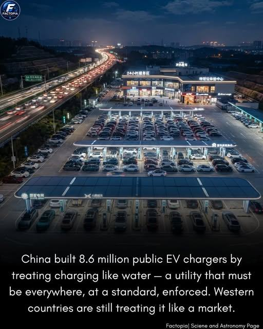

ARTICLE #013 · NOVEMBER 2026
The Future of Electric Vehicles Depends on Charging Everywhere
Making charging as commonplace and dependable as gasoline stations.

The missing piece of the electric-vehicle revolution
Imagine if gasoline-powered automobiles had been introduced without a dependable network of filling stations. People could admire the technology, but few would risk relying on a car they could not conveniently refuel. Electric vehicles face a similar challenge today.
For electric vehicles to become ordinary transportation for ordinary people, charging must stop feeling like a special trip or a technical puzzle. It should be available wherever people live, work, shop, travel, and park. The infrastructure must come before—or at least grow alongside—the vehicles.
Charging should be as ordinary as a gas station
We have spent generations building an extensive system of gasoline stations, highway service areas, signs, payment methods, and maintenance services. Drivers rarely plan their entire lives around finding fuel. That is the standard electric transportation must meet.
The future is not necessarily a one-for-one replacement of every gas pump with a charger. Many EV drivers can charge at home or at work while the car is parked. But apartment residents, renters, rural drivers, travelers, and people without garages need equally dependable options. Fast charging along highways and convenient neighborhood charging are both essential.
A national charging network: five essential commitments
1. Universal access. Put chargers in communities of every income level, at apartments, public parking areas, workplaces, retail centers, rural towns, and highway corridors—not only in affluent neighborhoods.
2. Reliability. Establish clear uptime expectations, preventive maintenance, rapid repairs, and transparent reporting. A charger that is broken when a driver arrives is not meaningful infrastructure.
3. Simple standards. Require easy-to-understand prices, interoperable connectors or adapters, accessible layouts, and straightforward payment without forcing every driver to install another app.
4. Affordable power. Use fair pricing and thoughtful rate design so charging does not become a new burden on working families. Expand grid capacity and manage charging demand intelligently.
5. Practical speed. Build the right mix: slower overnight charging where cars remain parked for hours, and high-power charging where travelers need to get back on the road quickly.
What the United States can learn from China
The accompanying image illustrates a powerful idea: charging infrastructure can be deployed at enormous scale when it is treated as a core part of transportation planning. Its numerical claim should be checked against current official data, including whether counts refer to public charging points, private chargers, or charging equipment more broadly.
The lesson is not that the United States must copy another country’s system. It is that we should plan the network as a connected national system, rather than hope that scattered private investments will always produce complete coverage.
Public responsibility, private innovation
Calling charging an essential utility does not mean the government must own every charger. Gasoline stations are mostly private businesses operating within a publicly supported road system. EV charging can likewise combine private ownership and competition with public planning, targeted investment, and enforceable consumer standards.
Federal and state governments can identify gaps, help finance underserved locations, coordinate highway coverage, and establish interoperability and reliability rules. Utilities can plan distribution upgrades. Businesses, property owners, cooperatives, and local governments can install and operate stations. The public should be able to count on the result.
The practical obstacles we must solve
Installing a charger is not simply placing a box beside a parking space. Sites may need new transformers, distribution upgrades, permits, accessible parking designs, and dependable communications. High-power stations can be expensive, especially where usage starts low.
A credible program must also account for electrical demand, battery and equipment supply chains, cybersecurity, vandalism, maintenance staffing, and rural economics. Public support should be tied to measured performance, not merely the number of installations announced.
A Terra Nova blueprint for action
Start by mapping where charging is missing and who is being left out. Set coverage and uptime goals. Prioritize apartment communities, underserved neighborhoods, rural corridors, and highway travel. Coordinate charger construction with grid improvements. Publish a public dashboard of working stations, prices, and outages.
Build a network that welcomes every driver, regardless of vehicle brand, income, or technical sophistication. Make charging simple enough that nobody needs to think about it.
The future we should choose
Electric vehicles have the potential to reduce tailpipe pollution, diversify transportation energy sources, and lower operating costs for many drivers. But their promise will not be realized through vehicle manufacturing alone.
We must build the infrastructure of trust and convenience around them. When charging is as natural as stopping for gasoline—or easier, because the car charges while we sleep, work, or shop—electric vehicles can take their rightful place in everyday American life.
This is the Terra Nova philosophy: we already have remarkable technology. Our task is to organize it so everyone can benefit. There is no them. There is only us. We are one.